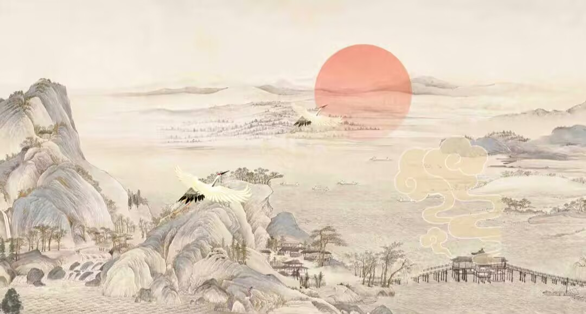
养生第一条：顺四时
----------------------------
人有五脏：心肝脾肺肾。
自然界有四季：春夏秋冬。
在中医理论中：四季养脾胃，春养肝，夏养心，秋养肺，冬养肾。
《皇帝内经》也说：春生，夏长，秋收，冬藏。
春季与肝脏相对应，肝主疏泄，在春季，自然界阳气升发，人体的阳气也随之向外发散。肝脏的疏泄功能正常，能够调节人体的气血运行和情志活动。如果肝气不疏，就容易出现情绪抑郁、胸胁胀痛等情况。
多吃绿色蔬菜，如菠菜、芹菜等。绿色入肝，这些蔬菜富含维生素和膳食纤维，有助于肝气的疏泄。同时，可以适量食用一些酸味食物，如酸枣仁、山楂等，酸味入肝，能起到滋养肝脏的作用，但也要注意适量，避免过度收敛。
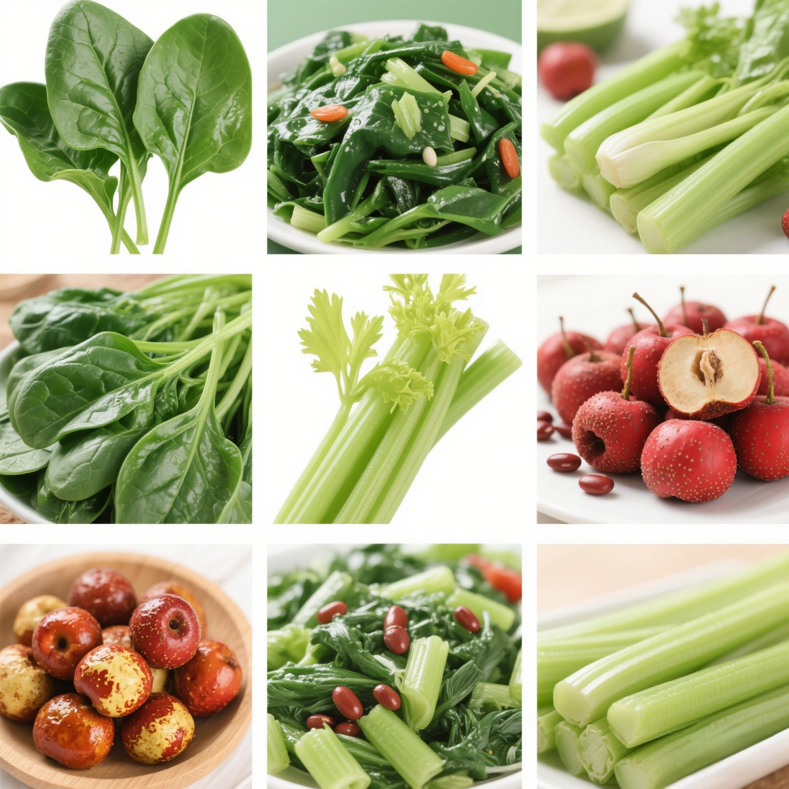
保持心情舒畅至关重要。可以通过参加户外活动，如春游、登山等来舒缓情绪。春季风大，人们在户外能感受大自然的气息，让肝气如同自然界的树木一样舒展生长。而且要避免暴怒、忧郁等不良情绪，因为不良情绪会导致肝郁气滞。
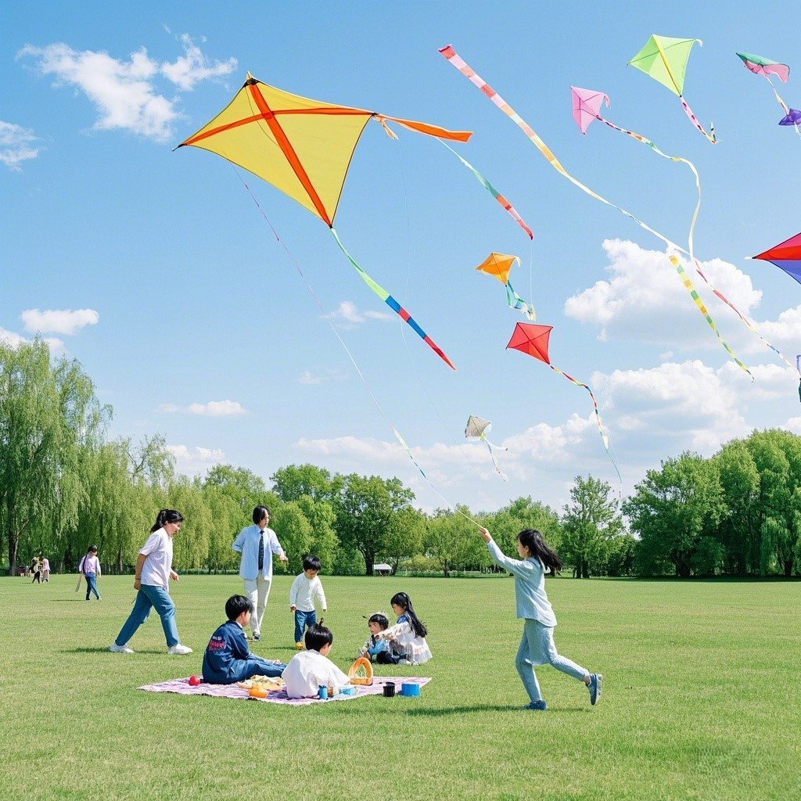
早睡早起，保证充足的睡眠。晚上 11 点前入睡，有利于肝脏的排毒和气血的调养。因为夜间是肝脏自我修复和养血的重要时段。
适合进行轻柔的运动，如太极拳、八段锦、放风筝等
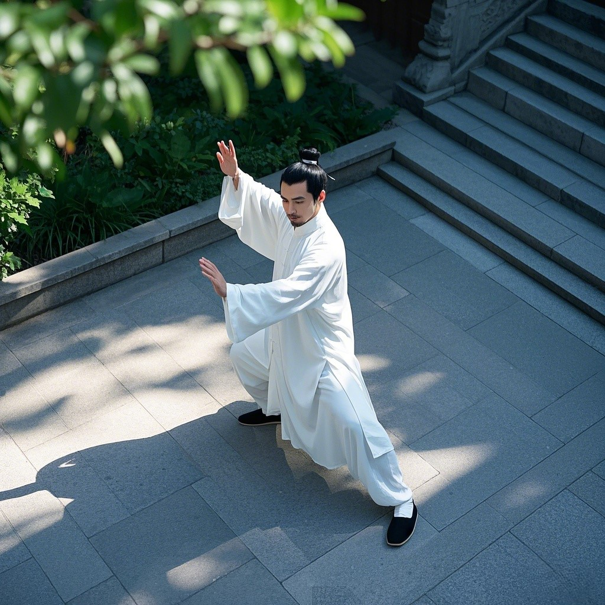
刮痧、艾灸、针灸、药棒、蜡疗、推拿按摩、耳穴疗法
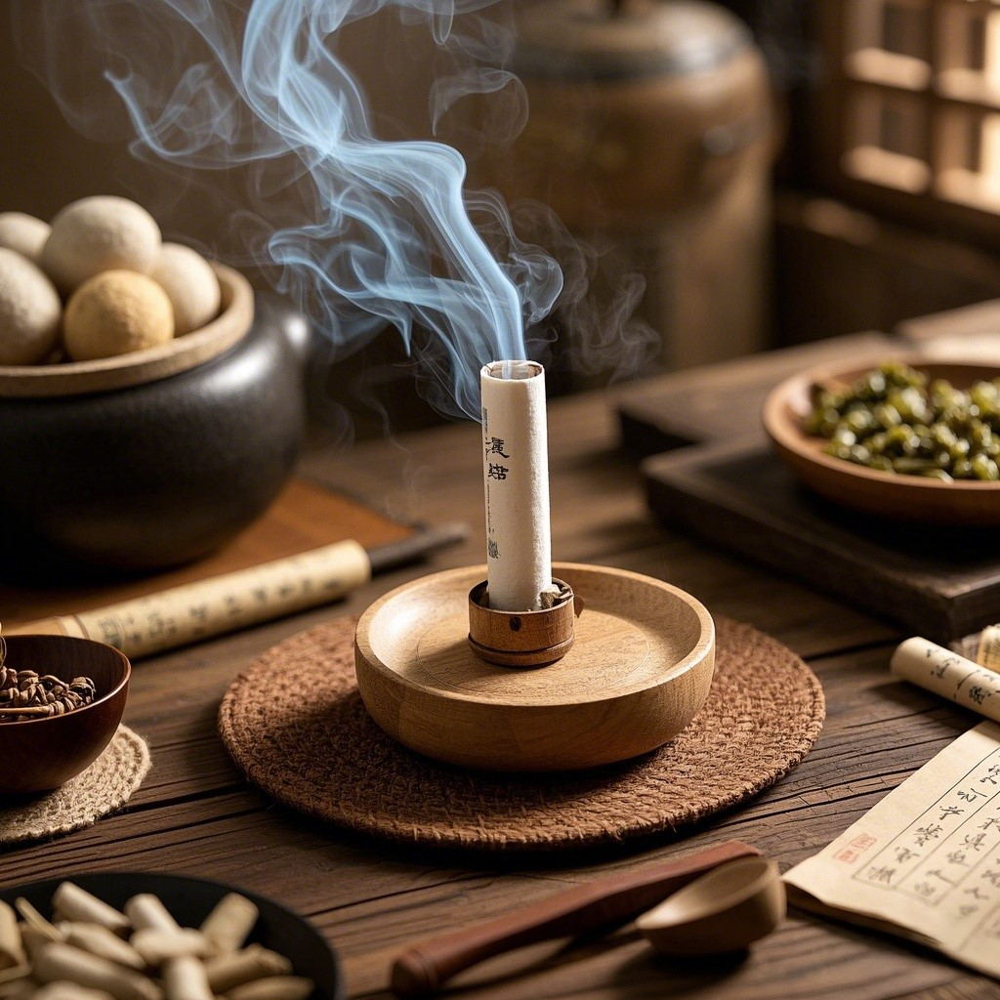
夏季阳气最盛，心为阳脏，主血脉和神志。在炎热的夏季，人体容易出现心烦、失眠等情况，这与心气的扰动有关。而且夏季人体出汗较多，汗为心之液，过度出汗会损伤心气。
夏季宜多吃红色食物，如西红柿、红豆等。红色食物有助于补心。同时，可适当食用一些苦味食物，如苦瓜、莲子等。苦味能泻心火，起到平衡心气的作用。此外，要注意补充水分和电解质，多喝一些淡盐水或绿豆汤，以防止因出汗过多而导致心气受损。
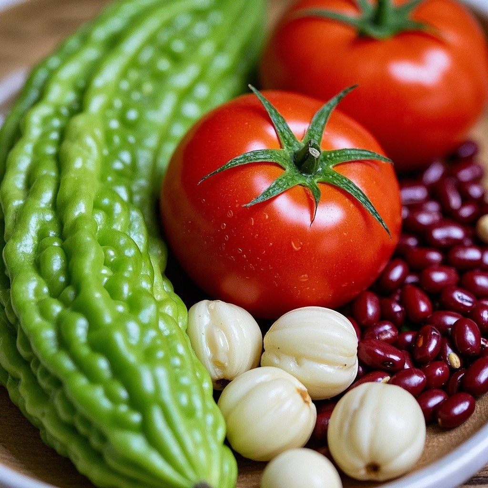
保持心态平和、安静。夏季天气炎热，人们容易烦躁不安，此时可以通过听舒缓的音乐、练习书法等方式来宁心安神。避免情绪过激，因为过激的情绪会使心火过旺。
晚睡早起，适当午休。夏季昼长夜短，顺应自然规律晚睡早起能使人体的阳气得到充分的舒展。中午休息 30 - 60 分钟，有助于恢复心气和体力，因为午时（11 点 - 13 点）是心经当令，午休能养心。
可在清晨或傍晚进行运动，如游泳、瑜伽、慢跑等。运动强度不易过大，避免过渡出汗损伤阳气和津液
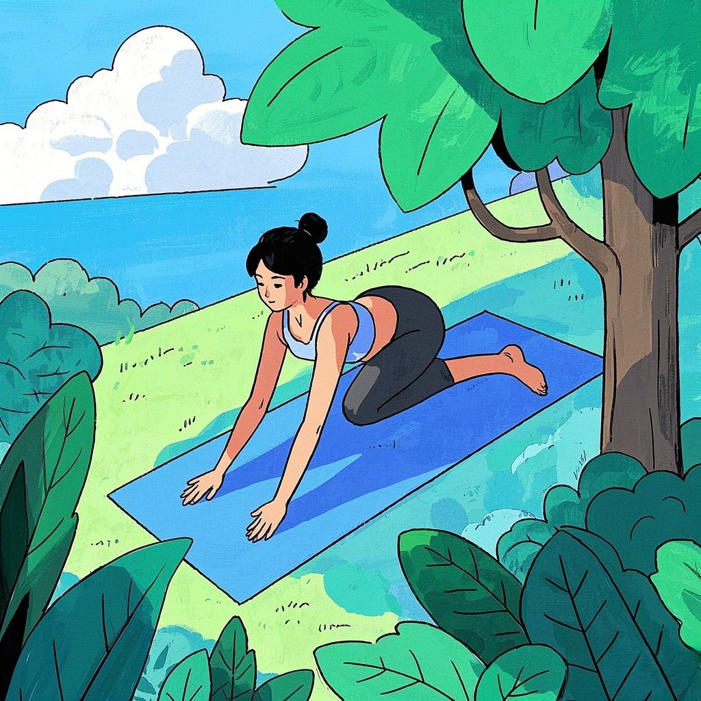
火龙灸、督灸、盆灸、雷火灸、拔罐、蜡疗、中药封包、穴位贴敷、针灸、耳穴疗法
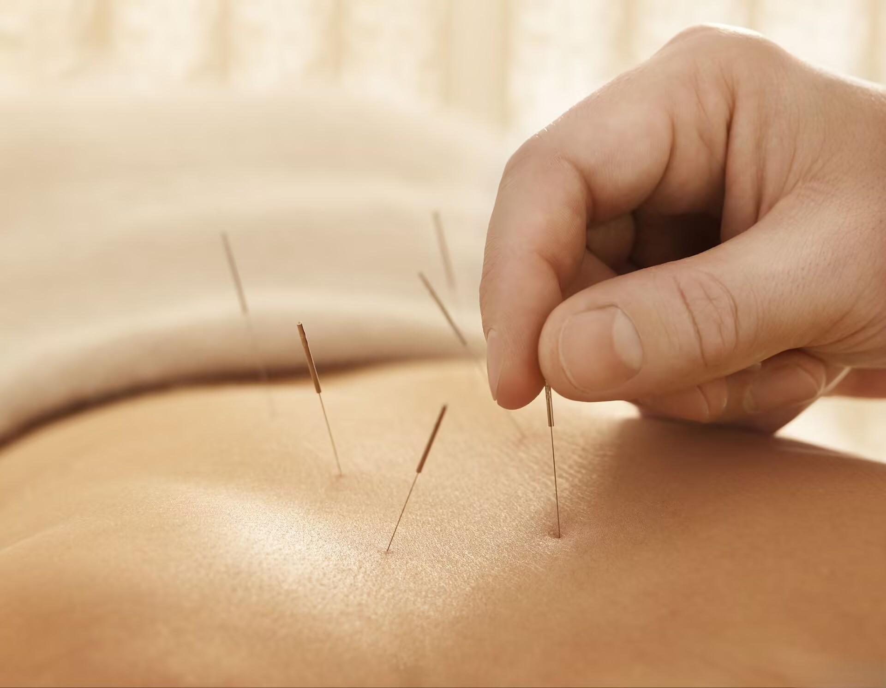
秋季气候干燥，肺为娇脏，喜润恶燥。干燥的空气容易损伤肺津，导致干咳、咽干、皮肤干燥等症状。而且秋季自然界的阳气开始收敛，肺气也需要相应地进行收敛和滋养。
多吃白色食物，如梨、百合、银耳等。白色食物能够润肺生津，缓解秋季干燥对肺的伤害。可以将梨煮水饮用，或者用百合、银耳煮粥，这些食物都有很好的润肺功效。同时，要少吃辛辣、油腻的食物，因为这些食物会加重肺的燥热。
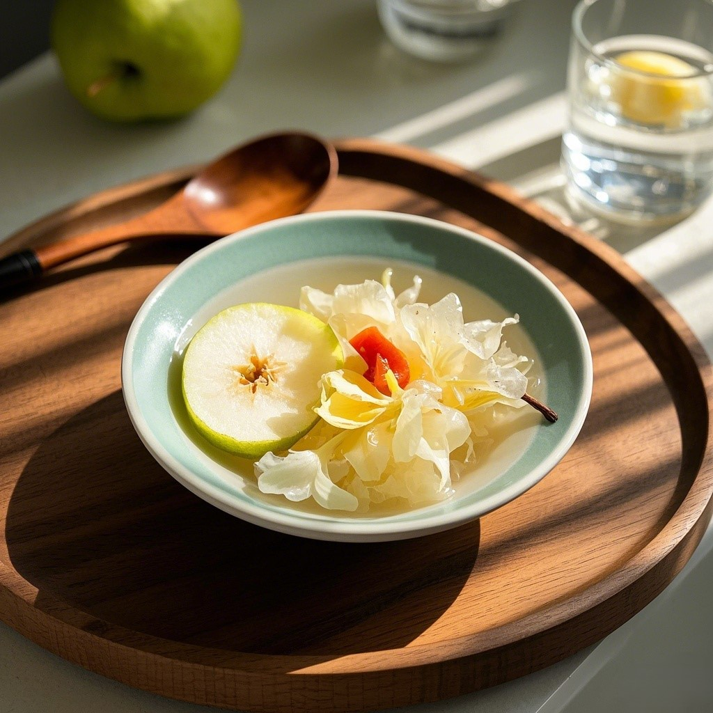
保持心情开朗，避免悲伤情绪。秋季草木凋零，容易让人产生悲伤的情绪，而悲伤过度会损伤肺气。可以通过参加一些社交活动、欣赏喜剧等方式来调节情绪，使肺气得以舒畅。
早睡早起，适当进行户外活动。秋季早睡早起有利于肺气的舒展和收敛。在清晨空气清新的时候进行散步等活动，能增强肺功能。同时，要注意室内空气的湿度，可以使用加湿器等设备来保持空气湿润。
可进行登山、慢跑、太极拳等运动，注意运动时不宜过度劳累，避免大汗淋漓
刮痧、拔罐、推拿拨筋、蜡疗、中药封包、中药熏洗、耳穴疗法、穴位贴敷
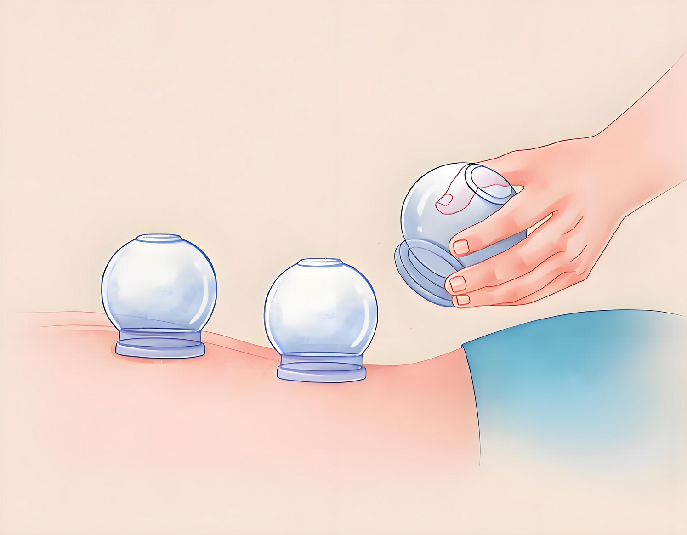
冬季是一年中阴气最盛的时候，肾为先天之本，主藏精。人体的阳气内藏于肾，冬季通过合理的养生方法可以增强肾的封藏功能，为来年的身体健康打下基础。
多吃黑色食物，如黑豆、黑芝麻、黑米等。黑色入肾，这些食物能够补肾益精。同时，冬季可以适当食用一些温热性的食物，如羊肉、核桃等，以温补肾阳。但要注意不要过度食用，以免上火。
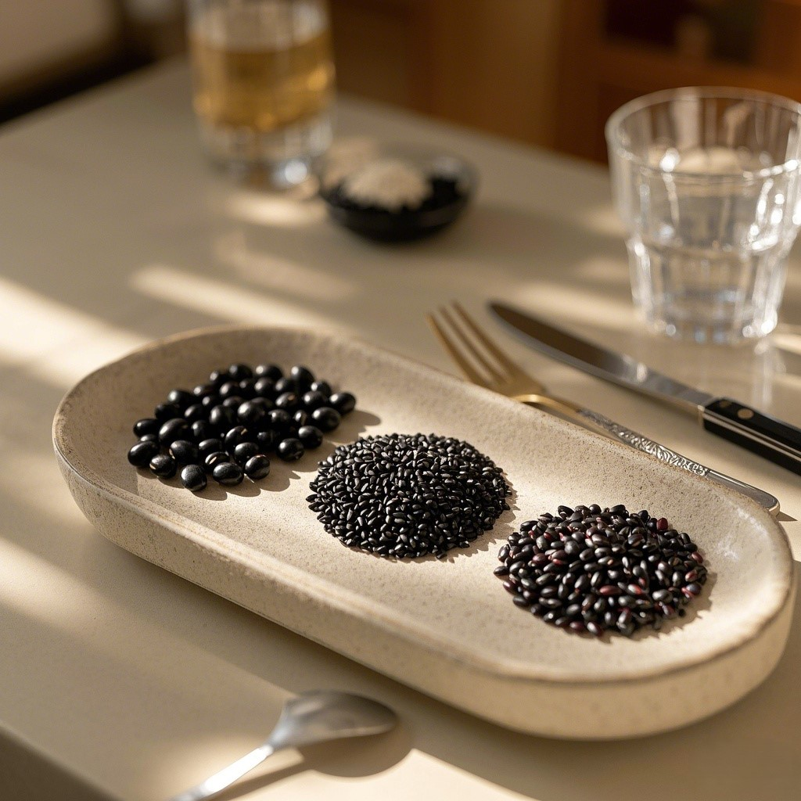
保持心情愉悦，避免惊恐。肾在志为恐，惊恐等不良情绪会损伤肾气。可以通过晒太阳、与家人朋友聚会等方式来调节情绪，使肾气得到滋养。
早睡晚起，保证充足的睡眠时间。冬季夜晚较长，早睡晚起能让人体的阳气得到更好的潜藏。同时，要注意腰部和足部的保暖，因为肾经起于足底，腰部是肾之府，受寒会影响肾的功能。
可在阳光充足的时候进行运动，如散步、慢跑、太极拳等。避免剧烈运动，以防损伤阳气
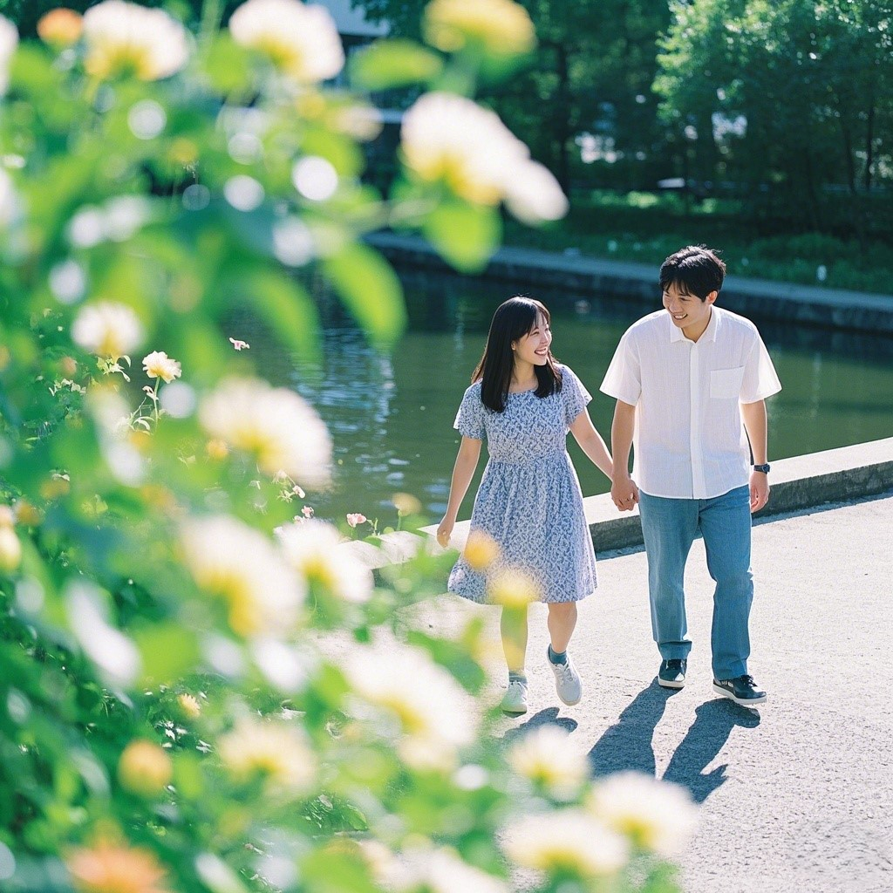
火龙灸、督灸、盆灸、雷火灸、拔罐、药棒按摩、中药热奄包、穴位贴敷、耳穴疗法
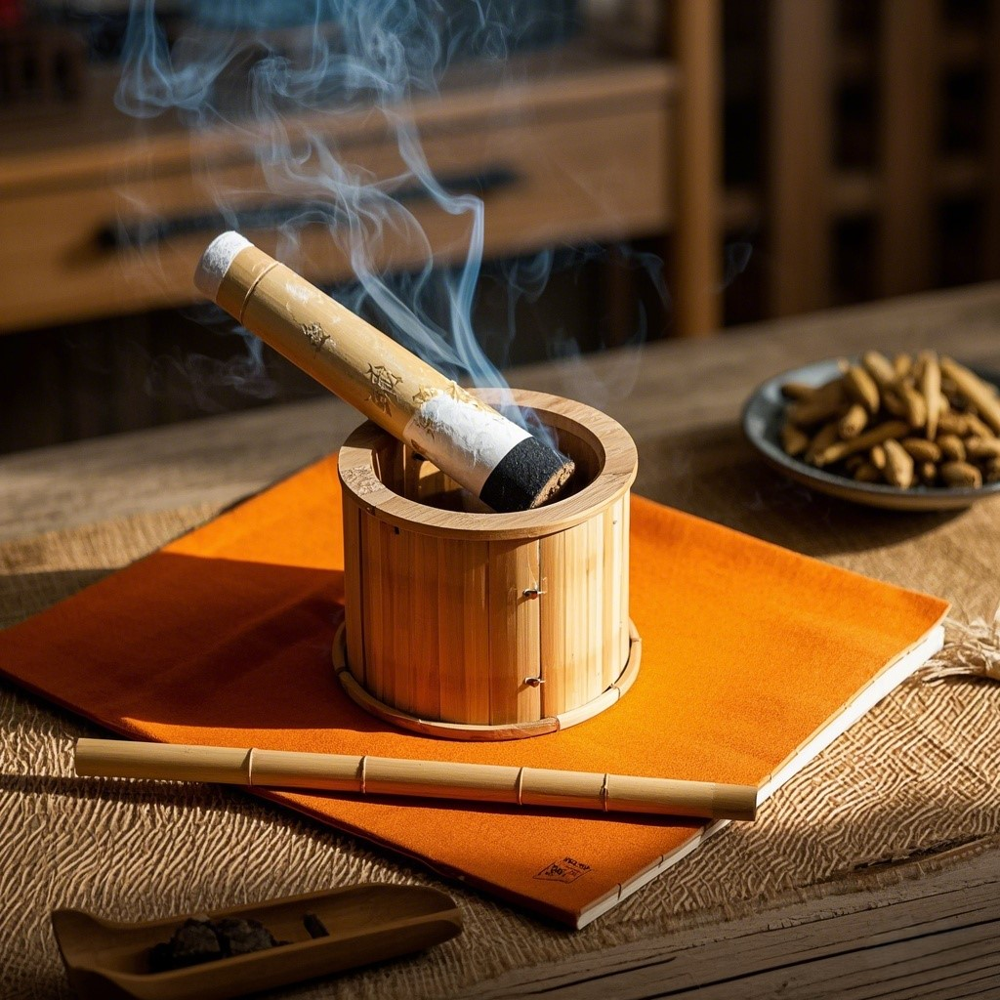
立春
立夏
立秋
立冬
雨水
小满
处暑
小雪
惊蛰
芒种
白露
大雪
春分
夏至
秋分
冬至
清明
小暑
寒露
小寒
谷雨
大暑
霜降
大寒
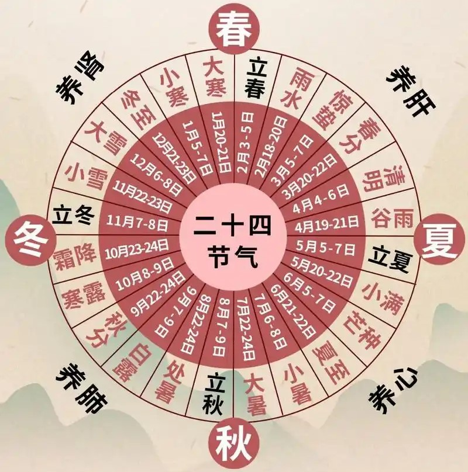